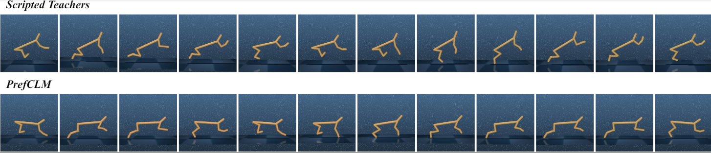

How PrefCLM Works
PrefCLM operates by leveraging the collective intelligence of multiple LLM agents to evaluate robot behaviors:
- Given task-specific contextual information and prompts, multiple code-based evaluation functions are sampled from crowd LLM agents.
- A cosine similarity check module then filters the sampled evaluation functions, selecting those that align with few-shot expert preferences within a specified tolerance.
- Evaluative scores are continuously assigned by these selected evaluation functions to pairs of robot trajectories. These scores are aggregated through Dempster-Shafer Theory (DST) fusion to form crowdsourced preferences, which are used for the reward learning in PbRL.
- Additionally, crowd LLM agents can also collectively refine their evaluation functions based on user interactive inputs given periodically in HRI scenarios.
Interactive Results
We evaluated PrefCLM on various locomotion and manipulation tasks, comparing its performance against traditional scripted teachers and other baselines. These graphs demonstrate that PrefCLM achieves comparable or superior performance to expert-tuned scripted teachers across various tasks, particularly excelling in manipulation tasks like Button Press and Door Unlock.

This visual comparison below highlights how PrefCLM leads to more natural and efficient robot behaviors compared to traditional methods. Locomotion behaviors learned by Scripted Teachers (top) and PrefCLM (bottom) on the Cheetah Run task.
The ablation results below demonstrate the benefits of our crowdsourcing approach and the effectiveness of DST fusion in managing complexities and conflicts among LLM agents. We conducted ablation studies to investigate the impact of crowdsourcing and DST fusion mechanisms within our framework

Acknowledgement
We thank the participants that contributed to the human evaluation tests.
BibTeX
@inproceedings{prefclm2024,
title={PrefCLM: Enhancing Preference-based Reinforcement Learning with Crowdsourced Large Language Models},
author={Author1 and Author2 and Author3},
booktitle={Name of conference goes here},
year={2024}
}